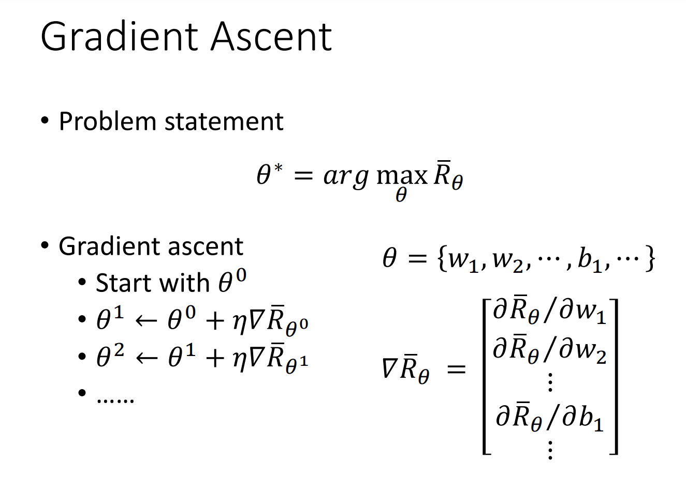
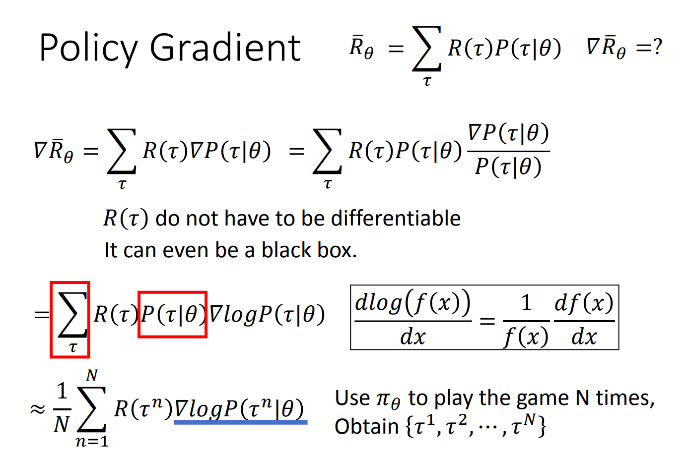
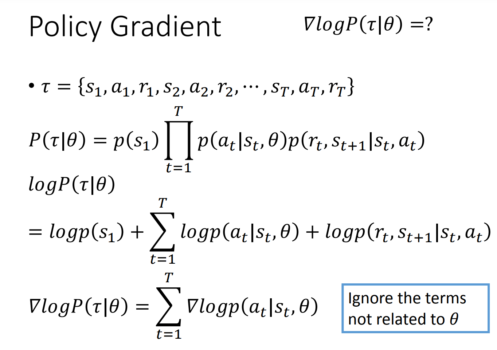
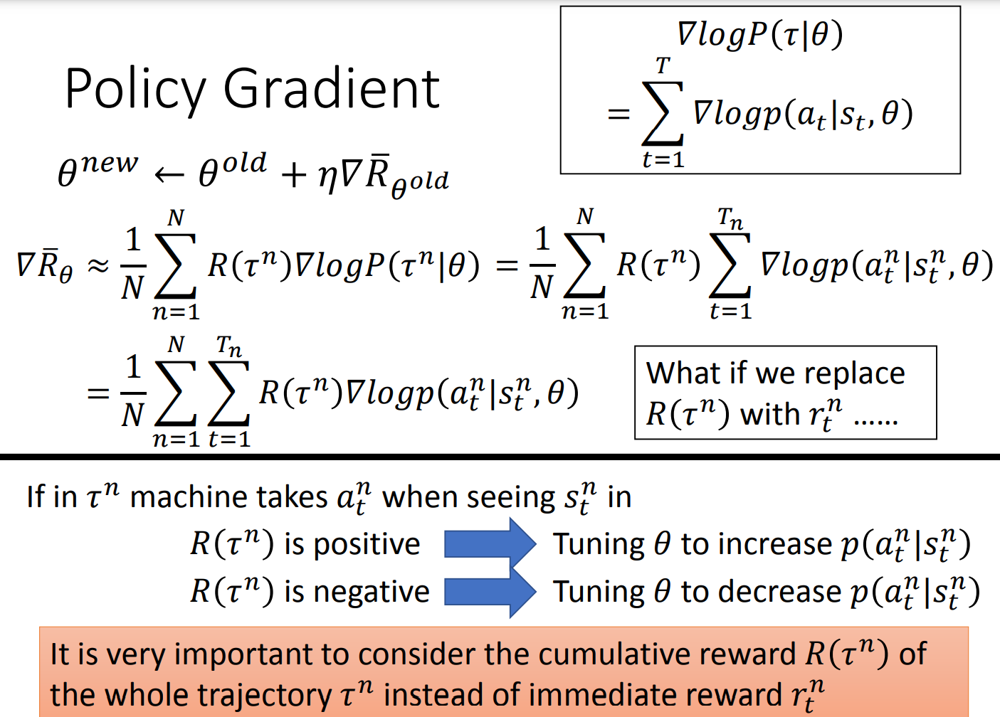

Policy Gradient
课件：http://speech.ee.ntu.edu.tw/~tlkagk/courses/MLDS_2018/Lecture/PPO (v3).pdf
   - 是在某一个时间点 的 observation 采取的一个 action，但是我们必须要把它乘上整个 trajectory 的 reward，而不是采取那个 action 以后所产生的 reward。否则 machine 就永远不会想让 left、right 产生的几率增加（reward 是0），只会让 fire 的几率增加。
- 为什么要对 的梯度除以它本身做 normalize？
- 假设现在让 machine 玩 N 次游戏，某一个 state 在第13、15、17、33次中都出现过，因为 actor 是 stochastic 的，所以看到同样的 s，不一定采取同样的 action。假设在第 13 个 trajectory 采取 action a，得到 reward 是 2；其他三个 trajectory 中 都采取 action b，得到 reward 是 1，比较小。但实际做 update 时，由于是总体求和，会偏好出现比较多的 action，即使 reward 相对较小。machine 就会把 reward 较小的 action 概率调大。这不是我们希望的。
- 先想成是一个分类的问题。要有 training data，有 input 和 output 的 pair。把 state 当作是 classifier 的 input。现在的 class 变成要采取什么行为。每一个行为就叫做一个 class（left，right，fire）。
- 训练资料从 sampling 的 process 来的。假设在 sampling 的 process 里，在某个 state sample 到 action a，就把这个 action a 当作是 ground truth。在 training 时就调整 network 参数使得看到这个 state，就执行 action a，即使得 action a 的概率变大。
- 个人理解： 就是经过了神经网络输出层经过 softmax 后的节点之一
- 实际目标函数会写成 minimize cross entropy 的形式，就是 ，其实就是 maximize log likelihood。
- 现在在 RL 中，目标函数前面还要再乘一个 weight。这个 weight 是，在这个 state，采取这个 action 时会得到的 reward。这个 reward 是在 state s 采取 action a 的这整场游戏中，最后得到的 total reward 这个大 R，而不是执行这个 action 后立即得到的 reward。要把每一笔 training data 都 weighted by 这个大 R，接下来就交给 TensorFlow 或 pyTorch 算梯度即可
- 直觉上：reward 是正，增加它的概率；负，减小概率。但有可能reward 都是正的
- 如果 都是正的，如果action a、b、c 都被 sample 到了，没有关系，它们概率的相对关系不改变；如果只 sample 到了 b、c，那么只有这两个概率会增加， action a 的概率会减小。
- 因此希望 减掉一个 bias，有正有负。bias 需要自己设计
- 最简单的做法是取 的平均值
- 给每一个 action 合适的 credit
- 原来的式子，只要在同一个 episode/游戏中，所有 state 和 a 的 pair 都会 weighted by 相同的 reward。显然不公平，因为同一场游戏中，也许有一些 action 是好的，有一些是坏的。
- 如果 sample 的次数够多，可能不是问题；但实际 sample 次数不够多。所以就要给每一个 state 和 action pair 合理的 credit
- 一个做法是不把整场游戏得到的 reward 全部加起来，只计算从这一个 action 执行以后所得到的 reward，因为这场游戏在执行这个 action 之前发生的事情和这个 action 无关
-
实际中，执行某个 action 后，时间越久，影响力越小
-
可以是 state dependent 的。事实上， 通常是一个 network estimate 出来的，是一个 network 的 output。
-
合起来统称为 advantage function，用 A 来代表
-
A depend on , 。上标 是指，需要一个 model 跟环境做 interaction，才能知道接下来得到的 reward 会有多少
-
advantage function 的意义：假设在某个相同的 state ，执行某个 action ，相较于其他可能的 action，它有多好。在意的不是绝对的好，是相对于其他 action 的。
-
A 通常由 network estimate 出来，这个network 叫做 critic
本博客所有文章除特别声明外，均采用 CC BY-NC-SA 4.0 许可协议。转载请注明来自 Seline's blog！